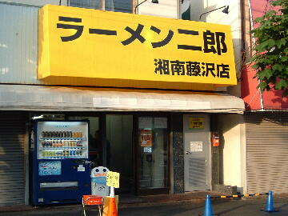
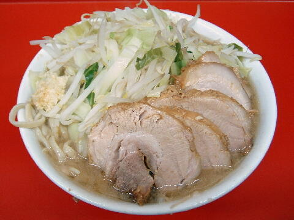
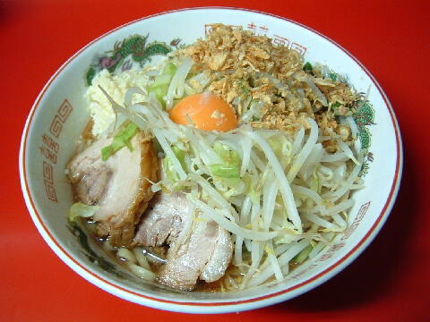
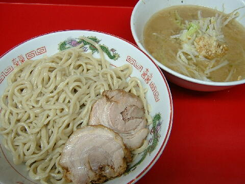

藤沢市 本町 1-10-14
火
11：00〜14：30 17：00〜21：30
日 11：00〜20：00

ラーメン 730円、豚入り 830円
大ラーメン 830円、大豚入り 930円
汁無し ＋80円、つけ ＋50円
ニラキムチ 100円、生卵 50円、粉チーズ 100円、味付うずら5コ 100円、九条ネギキムチ 100円
店員は、店主と助手。
コショウ、醤油ダレ、一味、カレーパウダー、酢（つけ麺提供期間のみ）。
レンゲ有。先端に深い刻みのあるエコ箸。割り箸も少量有。ティッシュ無。名刺無。
BGMは、ｉPod。
トッピングは、二郎基準。たまに紅生姜などのトッピングがある（Twitter により告知）。
ラーメン二郎 湘南藤沢店 湘南藤沢店のTwitter
「ラーメン二郎 藤沢」でヤフー検索
「ラーメン二郎 藤沢」でヤフーリアルタイム検索
「ラーメン二郎 藤沢」でグーグル検索

豚入り ニンニク
麺は、直系二郎のツルツル、グミグミした平打ち麺。量は二郎基準よりやや少なめ。
ぶたは、関内リスペクトの＠豚。関内よりも肉々しい食感。
スープは、甘辛で美味しい微乳化のスープ。
ヤサイは、モヤシ8：キャベツ2。茹で加減はホクホク。
ニンニクは、細かく辛みが旨い生ニンニク。

ラーメン＋汁無し ニンニク
トッピングはラーメンと同じ。
二郎の旨味が詰まったタレに、卵の黄身、フライドオニオンが加わる。
関内二郎のようにブラックペッパーは掛けられていない。卓上には有。
つけが提供されている期間は提供されない。

ラーメン＋つけ ニンニク
トッピングはラーメンと同じ。
つけ汁の丼には、ヤサイとニンニクが入る。タレはゴマ油の風味があるタイプ。
麺の丼には、冷水で絞められたシコシコの麺とぶた。麺の固め柔らかめはできない。
夏期限定。
ＰＣ店